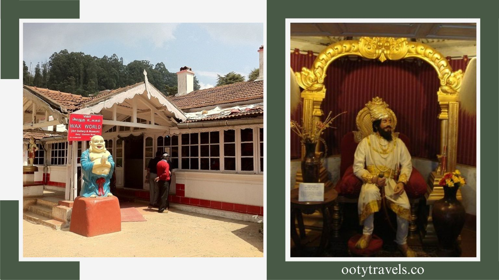
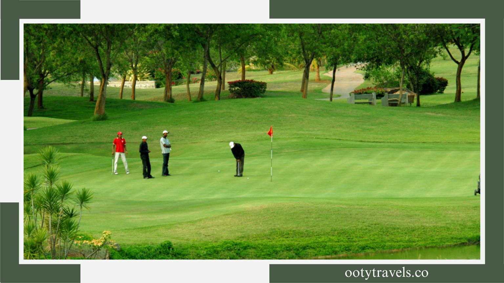

About Ooty
Ooty - Queen Of Hills
Ooty, one of the most popular hill stations in South India, offers views that can hypnotize anyone. I mean, if there are mountains, lakes, and tea plantations, it’s no surprise that the best places to visit in Ooty will amaze you with their beauty. This lovely destination in Tamil Nadu is home to the Nilgiri mountains, which stand tall with never-ending verdant meadows, and the emerald-colored lake that soothes the senses. It has everything that makes a hill station popular; from vibrant gardens to the oldest church, there’s a lot to visit and admire during Ooty sightseeing.
Popular Places In Ooty
If you are planning a vacation in South India soon, here are the most beautiful nature points and heritage spots for Ooty sightseeing. You will be thrilled by the depth of locations there are to find, and that allows you to have a great time. Feel free to visit any or all of the places for a relaxing vacation. These top places to visit in Ooty will ensure a memorable travel experience!
BOTANICAL GARDEN
Built in 1847, sprawling across 55 acres, Botanical Garden is a beautifully landscaped garden counted among the best places to visit in Ooty. The garden area is split into various sections, namely Lower Garden, New Garden, Italian Garden, Conservatory, Fountain Terrace, and Nurseries. Varieties of both indigenous and exotic plants, shrubs, ferns, herbs, orchids, and bonsai species are showcased here. This is one of the best places to visit in Ooty for all nature lovers and for a family outing.
ROSE GARDEN
With more than 3600 varieties of rose, the Rose Garden is one of the most gorgeous places you must cover while sightseeing in Ooty. Awarded as the ‘Garden of Excellence by the World Federation of Rose Societies (WFRS), this is one of the largest rose gardens in India, spread across 10 acres of land. Explore this place to cherish exotic species and to buy plants and saplings for your own garden. It is definitely one of the best places in Ooty.
OOTY LAKE
Among the most popular and serene places to visit in Ooty in 2 days is Ooty Lake. With a backdrop of picturesque Nilgiris, the lake rests in the middle of the green valleys. During the Ooty summer festival in May, many thrilling boat races are organized here. The lake also works as an amusement park. Enjoy the experience of boating in Ooty on your holiday in the Nilgiris.
ST STEPHEN’S CHURCH
Located on Upper Bazar Road, St. Stephen’s Church is one of the popular places to visit in Ooty in 2 days and displays amazing architectural charm. This is one of the oldest churches in the region and features painted window glasses, wooden elephants procured from the palace of Tipu Sultan, and plaques from the colonial era. Those who have a thing for history should definitely come to this church to satiate their curiosity. Make sure you include this church in the list of places to visit in Ooty to make your trip worthwhile.
TEA MUSEUM
Spread across 1 acre, the Tea Museum is one of the not-to-miss Ooty tourist places. It is surrounded by aromatic tea estates and lush Nilgiri mountains. You must visit this museum if you are a tea lover. You can see the tea-making process and taste some incredible varieties while looking at the mesmerizing beauty surrounding the museum. This is one of the places to visit in Ooty in 3 days..
WAX WORLD MUSEUM
Wax World Museum in Ooty is one of the best places to visit in Ooty with kids. A 130-year-old Colonial Mansion located near Ooty Lake houses this fascinating museum that showcases lifelike wax statues of historical and political personalities. The museum also displays typical rural households and replicates the local lifestyle, all of which are made of nothing but wax. With such interesting things to explore here, it is definitely one of the best places in Ooty to visit on your next trip.

MUDUMALAI NATIONAL PARK
This national park is one of the forest ranges that were first considered to be national parks. Mudumalai National Park is situated in the district of Nilgiri and lies on the Tamil Nadu-Karnataka border. Also, it comes on the way between Ooty and Mysore. It has recently been declared a tiger reserve owing to the presence of around 50 tigers. The best time to visit Ooty is at the beginning of summer or towards the end of the monsoon.
MINI CAR MUSEUM
Though tiny in the area it occupies, this museum is conveniently located and is a sheer delight for all car lovers and kids, which is why it’s one of the best places to explore in Ooty for families. When you’re here, you can also buy a miniature car here and take it home as a keepsake!
TEA PARK
If you wish to tread into a dreamy-looking tea estate instead of just looking at them from far away, then this is the best place for you to visit. It’s essentially a tea garden that has especially been acquired by the government of Ooty to let visitors immerse themselves in the rare feeling of being on a tea farm, plucking and sniffing the aroma of pretty tea leaves without causing any unintended damage to the natural environment. There’s also a tea shop located right inside the park where you can taste the different varieties of the famous Ooty tea, like masala tea, vanilla tea, and much more.
TIBETAN MARKET
Tibetan market is a very common name, as it is quite common in all the hill stations in India. And like all the tourist places in Ooty, the Tibetan market has its own peculiarities. You will find an amazing range of woollen clothes, beadwork necklaces, and embroidered items at exceptionally reasonable prices. It is certainly one of the best places to visit in Ooty and the best place for shopping in Ooty.

GOVERNMENT MUSEUM
To learn more about a culture or tradition, a museum is a great option. Enter the Government Museum, one of the best places to see in Ooty if you want to grab history lessons and explore a remarkable collection of art. While you find almost everything in Ooty, this museum gives you the right amount of experience to learn about the past of Ooty—the tribal folklore—art, craft, and sculptures.
TODA HOUSE
Toda huts are the property of the Toda tribal community in the Western Ghats. The curious structures of the huts will definitely pique your interest just enough to plan a visit. The charming little huts set against the backdrop of lush greenery will definitely blow your mind away. Don’t forget to take awesome pictures of the scenery. While you are there, try to learn more about the lifestyle and culture of the community.
KARNATAKA SIRI HORTICULTURE GARDEN
If you love gardens, then you will have plenty of choices to visit in Ooty. Karnataka Siri Horticulture Garden is one of the famous tourist places in Ooty, known for its verdant landscapes and lush greenery. The garden is located right next to Ooty Lake. So, you can take some time out and visit this place if you happen to be in the vicinity. The hues of green will refresh your senses and leave you invigorated. You may also learn a few things about plants and horticulture.
BISON VALLEY
Looking for peace? Head to Bison Valley, near Ooty, and spend some time amidst nature. The lush greenery and tranquility will definitely take away all your woes and leave you happy and free from all the burdens in life for a while. It is one of the most beautiful tourist places in Ooty for your next outing. You can also enjoy a myriad of adventure activities while you are here. The views of the Nilgiris from here are ecstatic.
DAY TRIP TO COONOOR
If you are on a multi-destination travel itinerary, a day trip to Coonoor or maybe a weekend must be scribbled somewhere in your plan. If not, you must. Coonoor is heaven for hill-station vibes and enchanting landscapes that can be reached via a short drive from Ooty. It is one of the most sought-after hill stations near Ooty. It is an escape within an escape that makes you travel more diverse as well as takes you to a close-by but culturally far away Ooty for a whole new experience. Make sure you consider most of these places to visit in Ooty to make your trip memorable. Whether you’re visiting with your family and friends or you are beloved, each place will ensure you undergo a once-in-a-lifetime experience.
PYKARA LAKE
Pykara is a sparkling lake nestled amid lush green Nilgiri valleys. There is also a roaring waterfall that goes by the same name. If you live near Ooty, then a day-long trip can be done by car, local buses, or private cabs. People can trek up to the waterfall, enjoy boating, and witness the picturesque valleys.
DODDABETTA PEAK
Offering you the most breathtaking views of the highest peak of Nilgiri—Doddabetta Peak—is a refreshing and mesmerizing visual treat for all. Along with the peak, one can relish the luxuriant surroundings, thick forests, and picture-postcard view of Ooty. If you are a trekker, you are going to love this place. It sits at the top of the list of famous Ooty places.
SHOOTING POINT
Movie buffs will easily identify this lush green meadow surrounded by thick forests and mesmeric Nilgiris, as it has been seen in many of the Bollywood blockbusters. Locally known as ‘Shooting Medu’, this place is perfect for relaxation, picnics, and stunning views. When travelling with your family, this place should top the list. This is one of the places to visit in Ooty in one day. Don’t forget to bring your cameras!
SIM’S PARK
Sim’s Park is a must-visit park and botanical garden for all the nature lovers out there. There are beautiful plants and trees, including the Bead Tree, Queensland Karry Pine, and Handsome Ornamental Tree. The highlight of the park is its annual fruit and vegetable show, held in the month of May. Undoubtedly, it is an important tourist place to visit in Ooty and is a must-add-on to this list classifying Ooty tourism.

OOTY GOLF COURSE
The splendid Ooty Golf Course is among the most famous Ooty tourist places that let you showcase your golfing skills in utterly lush surroundings. Other than golfing, it’s also a popular place to indulge in a hearty meal or even stay for the night. It’s a great place for those who think golfing is only for the elite, as it allows you to try this sport on a very low budget while also offering commendable hospitality other than stunning views.
OOTY BOAT HOUSE
Though it’s at the same place as the famous Ooty Lake, the boathouse makes up for an exciting tourist attraction in itself. The Ooty Boathouse is among the finest Ooty attractions for those who are seeking a quiet, peaceful afternoon or wish to spice up their day with some adventure and thrill. The boathouse is the perfect outing for families with kids since it offers so much excitement and fun. It’s also a great place for those who wish to get clicked before the scenic Ooty Lake with their loved ones!